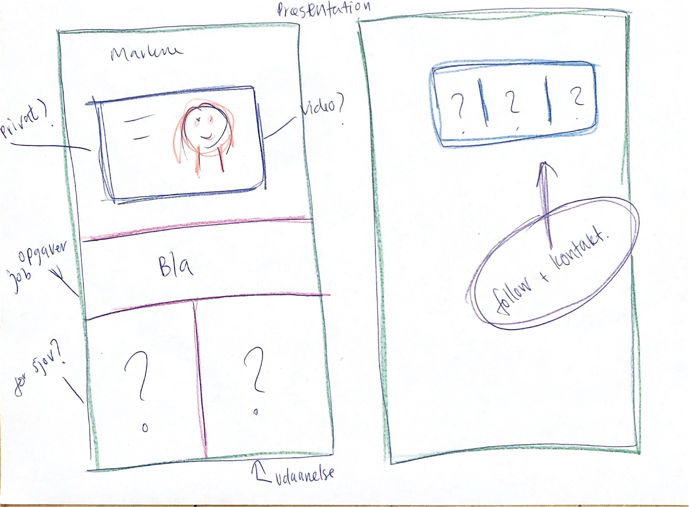
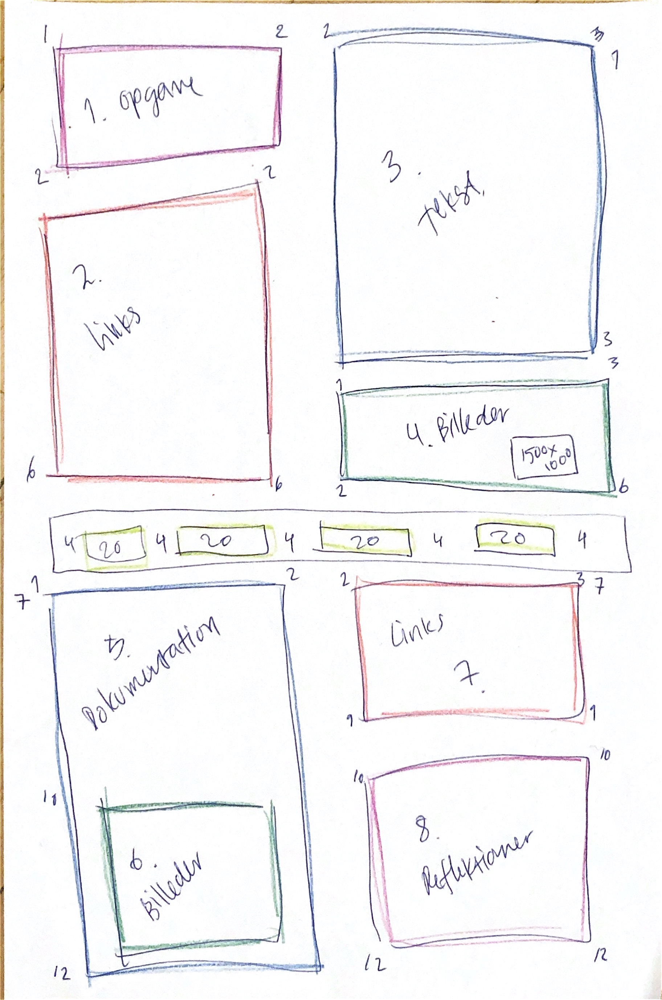
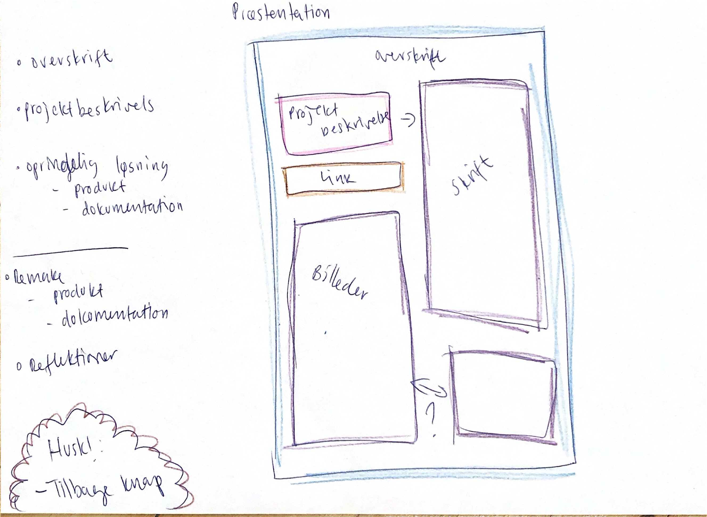
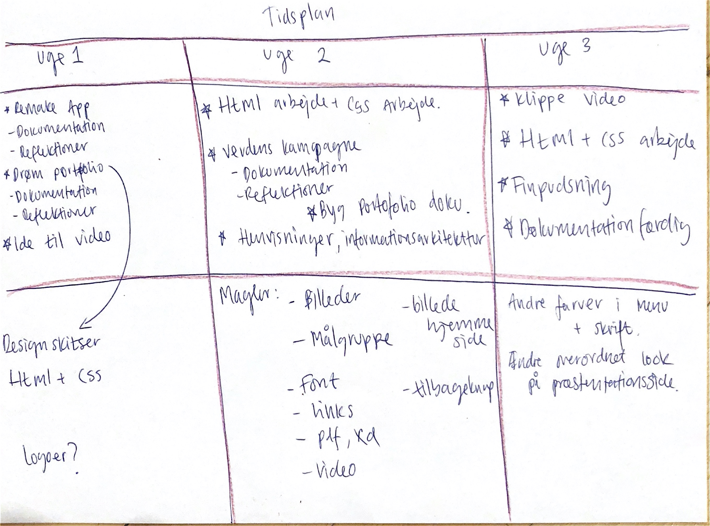

Byg din portfolio - remake
Ændringer
Den remaket portfoilo er ændret totalt, fra den originale. Dette er gjort med udgangspunkt i den remaket drømme portfoilo.
Den originale portfolio havde et sådanne design at den var lavet på en enkel side, hvor man blot kunne scrolle ned og/eller klikke sig rundt. Det første valg der blev taget i arbejdet med den remaket portofolio var at netop dette design skulle laves om, så der blev lavet undersider.
Jeg har bibeholdt designet med en lang side, som man kan scrolle ned af og/eller klikke rundt på, på undersiderne der indeholder arbejdet i de forskellige flows. På den måde har én underside et emne, eksempelvis, har en af disse lange undersider et enme, her en flowopgave, hvor der først er præsenteret den originale besvarelse og efterfølgende den remaket model.
Dette design er, på grund af corona, kun blevet testet fysisk af en enkel bruger og visuelt gennemgået med to. Denne ekstrem lille brugertest, viste dog meget posittivt tilbagemelding og derfor blev designet benyttet.
Der var dog ændringsforslag, ekspempelvis at forside teksen og menubaren stemte overens. Hvilket blev implementeret da det gav en sammenhæng mellem netop forsiden og menubaren. Det skal medvirke til at brugeren, fra forside, kan trykke sig ind på samme side fra flere steder, ikke blive forvirret over forskellige tekst og nemt kan navigere rundt på portfolien.
Til sidst var der kommentar på brugen af steger under teksten, dette er nu også ændret, der fremgår nu kun streger under tekst der fungere som knapper og ikke også overskrifter.
Det havde selvfølgelig været optimalt at brugertesten var nået ud til flere, hvilket videre arbejde med portofolien kan få glæde af.
Der ersket ændringer undervejs med kodning arbejdet, da det virkede bedre i formatet.
Der er lavet en menubar i toppen af siden, for at brugeren bedre kan navigere på siden, denne er først kommet til i arbejdet med netop kodningen af siden.
Den er lavet i farven #6AA392, denne var tiltængt at have en stor plads på siden. Men da det kom op på en stor skærm, gjorder den udtrykket meget mørkt. Derfor blev den rykket op i menubaren.
Frontpagen er lavet om, af flere omgange, for at skabe det mest harmoniske slutreslutat. Det har stadig et legende udtryk som var hovedideen bag remaken.
På alle sider er der lavet en over skrift i fonten:Kaushan Script, det giver et personligt udtryk, da det kunne ligne at det var håndskrevet. Samtidig giver det en god gentagelse, da det er ens på alle sider.
Der er ændringer, på de forskellige sider af portfolioen, disse er kommet blandt andet på grund af manglende evner eller manglende tid i arbejdet med kodningen, samt hvad der virkede bedst på skærmen.
Sideantallet har også ændret sig fra prototypen, der er fjernet en side som der ikke havde noget indhold.
Farverne har ikke ændret sig, det har placeringen af dem dog. Ekspemelvis har alle sider fået den samme baggrundsfarve, dette er gjort for at gøre det mere behageligt at se på samt give det hele en rød tråd, eller i dette tilfælde en gul tråd.
Til sidst er der tilføjet billeder for at give lidt personlighed.
Klik her for at komme til forsiden
Reflektioner
Det har været en helt vild og vanvittig eksamensperiode, jeg var kommet tilbage fra barsel en måned forinden og alt hvad jeg havde lært på første semester lå et år tilbage. Derfor har det krævet en del af mig personligt at komme i mål, men jeg er meget tilfreds med det resultat der er kommet frem.
Jeg fik fra starten af prioriteret min tid sådanne at jeg havde meget tid til at arbejde med kodningen, hvilket jeg har været meget glad for, da det har taget lang tid.
Jeg valgte at gå med et helt nyt design og startede derfor helt forfra, måske derfor har det været en meget tidskrævende affære. Jeg har været meget bevidst om fra starten, at jeg gerne ville lave en farvefyldt portfolie og det synes jeg at jeg er kommet godt i mål med.
Havde jeg haft en uge mere, ville jeg gerne have haft arbejdet mere med min videosekvens.Jeg ville gerne have haft brugt længere tid på mit arbejde med min videosekvens, men tiden løb simelthen fra mig. Dog er jeg tilfreds med videosekvensen, jeg synes at den rammer meget godt det jeg havde tænkt fra starten, at lave en lille sjov video der fik en til at smile. Derudover ville jeg gerne have haft arbejdet med min "see my work" side, jeg ville gerne tilføje en hover effekt på billederne, men måtte simpethen give op på det, efter flere timers forsøg.
Min vision med min portfolio skrev jeg ned i nogle værdiord: sjovt og farverigt. Det er jeg efter min egen mening, kommet godt i mål med.
Jeg synes selv at jeg har fået lavet en portfolio der er nem at navigere i, behagelig og sjov at se på og forhåbentlig er det en man husker.
Mockups af portfolio design
Til venstre en tegning af de første tanker omkring portfoliens design, til højre et udkast lavet i Adobe Xd

Tegninger fra processen
Øverst til højre en skitse af det ønsket udtryk for præsentation/arbejdssiderne, øverst til venstre skitse af grid layoutet og nederest til højre en tidsplan for hele eksamensprojektet.
  